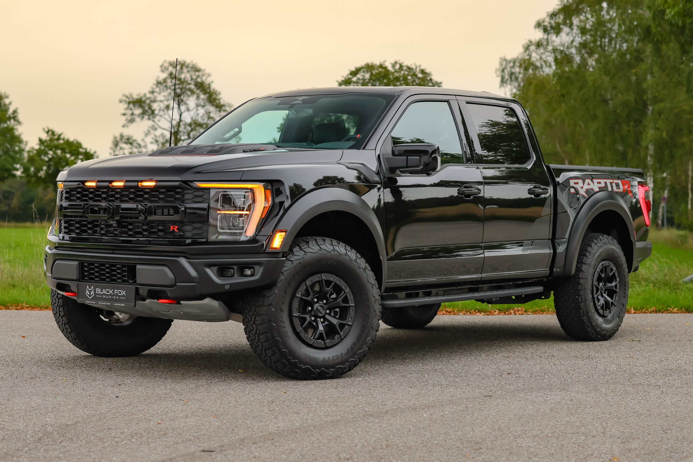
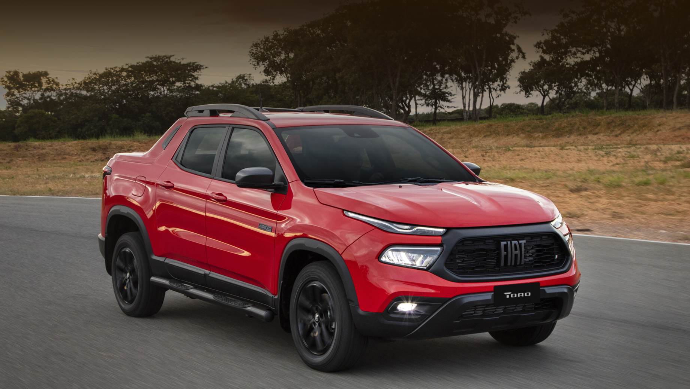
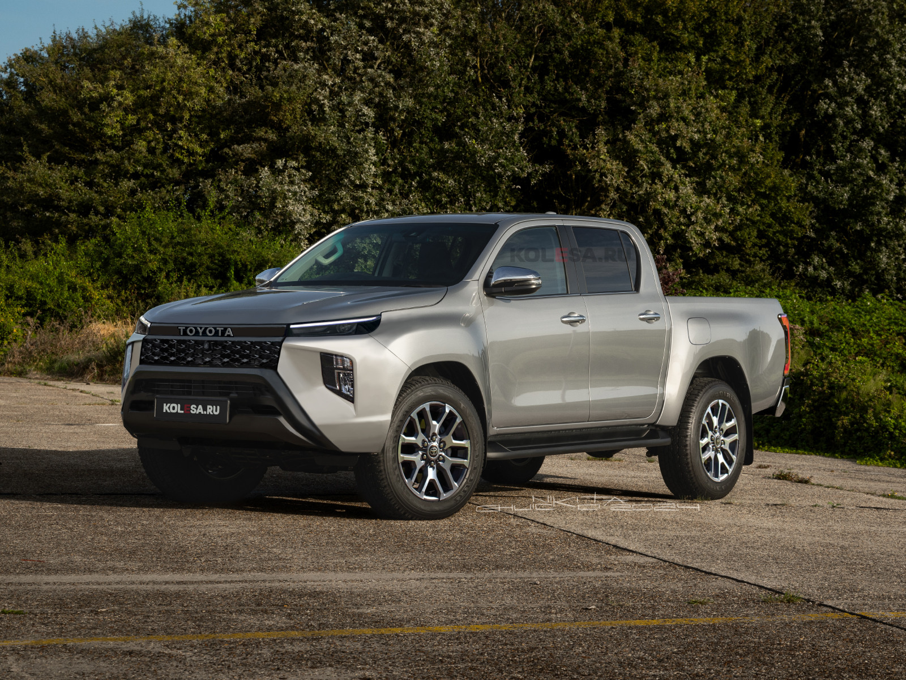
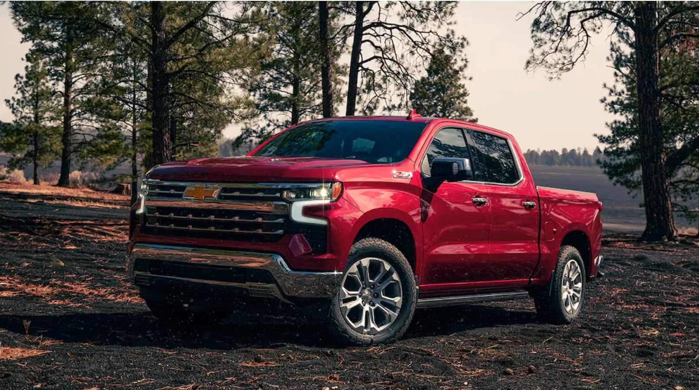
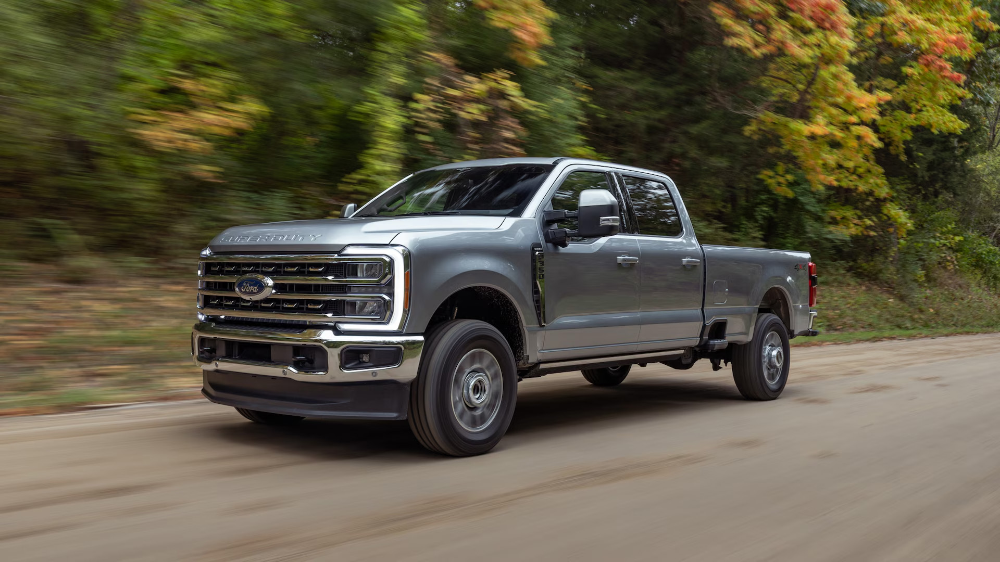
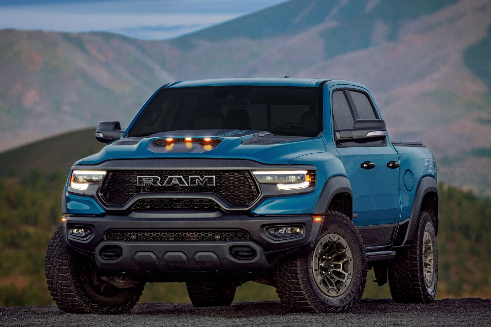
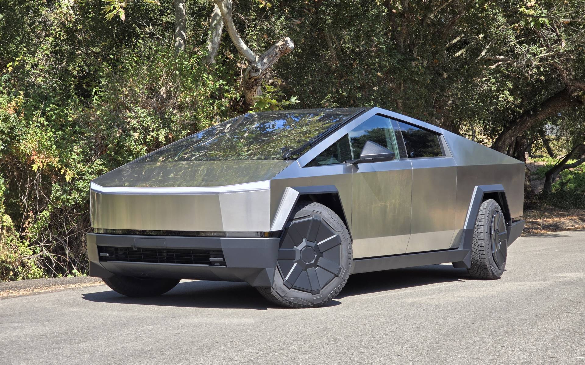

Кузов ПИКАП

Пикап (Pickup) – это автомобиль с грузовой платформой в задней части кузова, созданный для перевозки грузов, работы в тяжёлых условиях и, в некоторых случаях, активного отдыха. Он сочетает проходимость внедорожника и практичность коммерческого транспорта, оставаясь при этом комфортным для повседневного использования.
Основные характеристики:
- Открытая грузовая платформа – позволяет перевозить крупные и тяжёлые грузы.
- Рама или усиленный кузов – высокая прочность для эксплуатации в сложных условиях.
- Мощные двигатели – часто используются V6, V8 или дизельные моторы для тяговитости.
- Полный или задний привод – в зависимости от модели и конфигурации.
- Разные размеры кабины – от двухместных до полноценных пятиместных версий.

Fiat Toro

Toyota Hilux
Классификация:
- Компактные пикапы – небольшие модели, удобные в городе (Ford Maverick, Hyundai Santa Cruz, Fiat Toro).
- Среднеразмерные пикапы – баланс между грузоподъёмностью и управляемостью (Toyota Hilux, Ford Ranger, Nissan Navara).
- Полноразмерные пикапы – мощные рабочие машины с высокой грузоподъёмностью (Ford F-150, Chevrolet Silverado, RAM 1500).
- Тяжёлые пикапы – модели с максимальной тяговой силой и грузоподъёмностью (Ford F-250/F-350 Super Duty, RAM 2500, Chevrolet Silverado 2500HD).
- Спортивные и внедорожные пикапы – заряженные версии с мощными двигателями и усиленной подвеской (Ford F-150 Raptor, RAM 1500 TRX, Toyota Tundra TRD Pro).
- Электрические пикапы – современные модели с электромоторами и высокой тягой (Tesla Cybertruck, Rivian R1T, Ford F-150 Lightning).

Chevrolet Silverado

Ford F-350 Super Duty

RAM 1500 TRX

Tesla Cybertruck
Преимущества:
- Грузоподъёмность – перевозка тяжёлых и габаритных грузов.
- Проходимость – особенно у полноприводных моделей с внедорожными пакетами.
- Универсальность – можно использовать и для работы, и для отдыха.
- Мощные моторы – тяговитые двигатели для буксировки прицепов и работы в сложных условиях.
Недостатки:
- Габариты – большие размеры затрудняют парковку и манёвренность в городе.
- Расход топлива – высокий из-за массы и мощных двигателей.
- Открытый багажник – требует дополнительных крышек или кунга для защиты груза от осадков и краж.
Пикап – это выбор для тех, кому нужен мощный, надёжный и практичный автомобиль. Он отлично подходит для работы, активного отдыха и бездорожья, но в городских условиях может быть менее удобным.